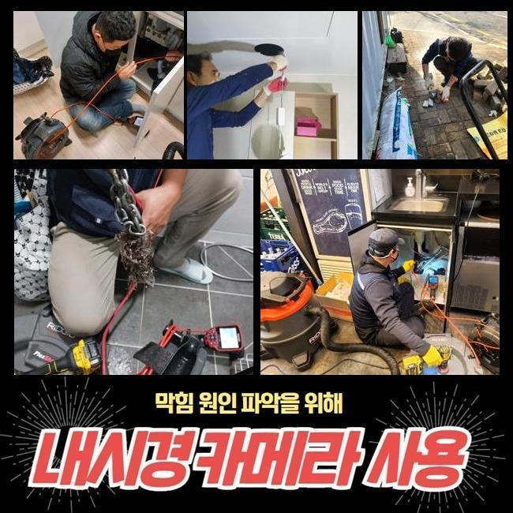
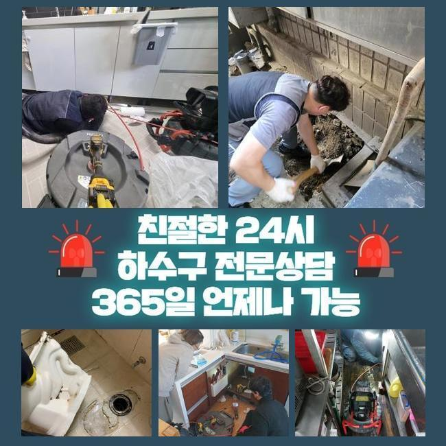
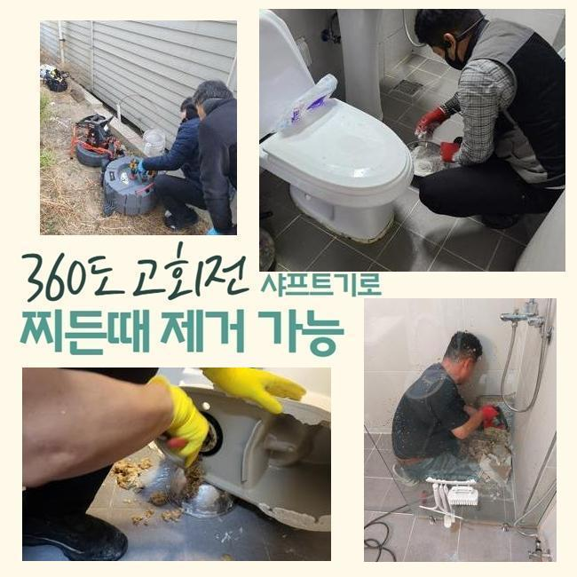
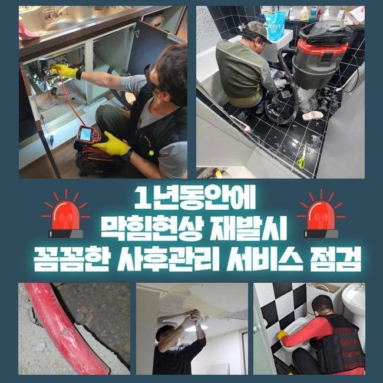
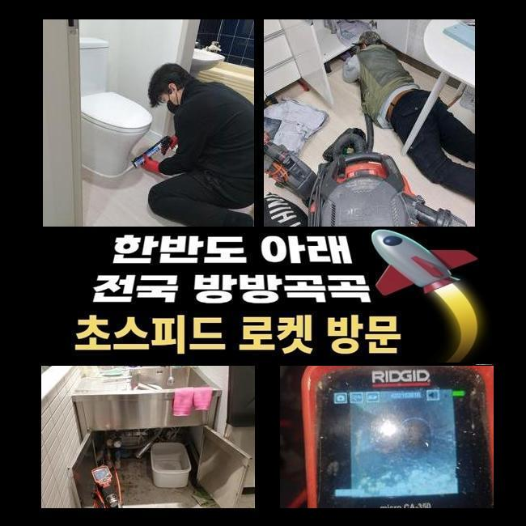
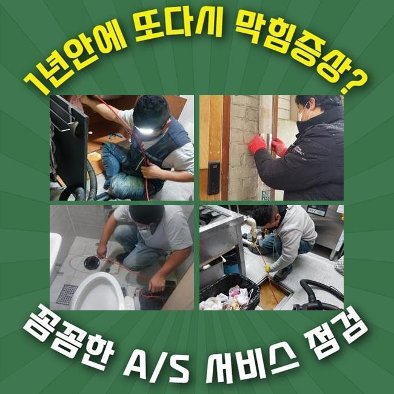

🏠 강동구 둔촌동대변기뚫음 강일동 악취차단 설비업체
용인 싱크대막힘 전문 시공 후기

📋 작업 개요
- 위치: 용인
- 서비스 유형: 싱크대막힘, 변기막힘, 배관막힘, 뚫는업체, 배관청소, 악취차단
- 작업 일시: 2025. 3. 1. 21:57
- 업체명: 하수구수사대 (010-5615-2118)
🔍 문제 상황
강동구 둔촌동대변기뚫음 강일동 악취차단 설비업체
금일에는 상가내부의 씽크대에서 시작된 배수정체를 타파한 현장을 소개할 예정이에요
따라하기 쉬우며 효용성있는 정보들이 많으니 집중~!
오피스라는 현장에서 생겨난 일이다 보니 셀프조치로 시정하려는 시도도 보였는데요
전문업체는 수리계획들을 어떤 과정으로 실시하는지 더불어 각 관로들을 유지시키는 방안도 쉽게 설명드려볼게요
고객분은 평상시에 요리등을 하는 것이 아니였기에 배관막힘이 없을것으로 여겼다고 전해주셨어요
이곳의 경우 식자재들을 쓰지 않는 공간이라서 정기적인 관리들이 진행되지 못하는 현장이 많아요
저희전문진은 즉각 출장을 나갔는데요 도착하여 하수관을 주시해보았죠
우선 육안으로 관찰하니 솟구치는 상황은아니였지만 느리게 흐르고 있었어요
이럴땐 갑작스레 고이게되고 솟구치는 문제들이 생기게 됩니다

🔎 원인 분석
💡 전문가 진단: 정밀 진단 장비를 사용하여 슬러지의 고착 여부를 판명하고 타격/세척 작업을 실시했습니다.
그리하여 석션기계로 일컫는 전문기계를 운용하여 입구 근처의 하수찌꺼기부터 제거해주었습니다
석션장치는 내시경을 이용한 진단에 앞서 깨끗한 시야를 위하여 운용하기도 하며 찌꺼기와 같은 이물들을 청소시킬때 실질적인 역할을 맡고 있어요
석션기기에 잔해들이 배출되었지만 배수구로 더디게 흐르는 상태였습니다
석션장치 이용 이후 절차로는 내시경카메라로 하수관을 체크했죠
내시경케이블을 투입시키니 슬러지들이 떡하니 자리잡아 배관구경이 좁혀진 상황이였습니다
요리를 안하는 곳임에도 왜 잔해들이 축적된걸까 생각할 수 있지만 사무공간에서는 정기적인 관리들이 진행되지 못해서인데요
그리하여 주전부리 및 커피의 잔여물질 혹은 기름들이 엉키게되어 슬러지이물을 만들어냅니다
내시경으로 배수관을 체크해보면서 샤프트장치로 흡착물들을 타격하며 점진적으로 각 관로들을 청소해주니 물길들이 확보되며 배수영역이 넓어지게 되었습니다
기름들은 송출 시 불그스름한 색을 띄게되어 이물이 제거된다면 깨끗하게 탈바꿈되는것을 보게됩니다
스케일링을 진행시켰는데도 불구하고 물이 하수관으로 제대로 안빠지는 문제들이 남아있었습니다
그리하여 대량의 물들을 한꺼번에 부어보니 특정한 위치에서 고인현상과 동시에 통수장애가 나타나는 결함이 잔존해있는 상태였습니다

🔧 작업 과정
물들이 흐름이 원천중단되었단건 놓치게된 요소들이 남아있단 시그널이에요
슬러지말고도 놓친 요소가 존재한다는 걸 의미하기에 외측라인까지 점검할 필요들이 있었는데요
저희전문진은 지속적인 씽크대막힘의 까닭을 찾고자 내시경 선을 수직배관 끝까지 투입시켰습니다
마침내 알게된것은 배수라인의 일부분들이 바닥부분에 매립되어진 형상이 아니라 외측으로 빠져나와 설치된 상태라는 점이였죠
실내부터 내시경장치로 확인시키는것이 힘들어 자리를 옮겨 역순으로 기기들을 사용하도록 특정부분을 뚫은 후 그 부위에 내시경 내시경케이블을 넣어주었죠
내시경 선을 넣으니 이물들로 좁혀진 배수길을 관찰하게되었습니다
사무실에서부터 원래의 배수관이 별개인 상태였고 다른 배수관이 외측으로 이어져있는 모습이였습니다
해당 지점을 넘어가니 세면대로 올라가는길에 사이즈가 컸던 오염물이 떡하니 가로막아섰죠
주방쪽의 관로가 아닌 예측하기 힘든 위치에 사이즈가 컸던 오염물이 존재해서 인지하기까지 시간들이 꽤 소요되었지만 결국 지속적인 막혀버리는 문제들의 주된 까닭들을 찾았죠
몇번에걸쳐 지점들을 체크하고 이물제거가 필요한 포인트의 배수관을 자른 뒤에 이물을 배출해주었는데요
배출시켰더니 각진 고무재질이였는데 왜 사용되었는지 알 수 없었지만 크기까지 상당한 수준이였고 배수관에 놓인 모습이라면 통수되는것이 불가한 오염물이였습니다
싱크대쪽의 배수관과 통수오류를 발생하게 만드는 이물질들도 사라지게하는 절차를 진행하니 배수과정이 복구되었고 수리들이 완료됐죠
그리고 고객께선 냄새나는 것에도 여쭈셨습니다 작업 중에 느꼈지만 관로에서 피어오르는걸 확인했어요
트랩부속에 노후되는 증상이 보였는데요 현장에서 마무리를 하고서 튼튼한 트랩부속으로 교체도 말끔하게 해드렸습니다
확인을 위해 탕비실쪽으로 가 싱크대쪽에 많은 양의 수도들을 받고서 내려보니 처음관 다르게 이상없이 흐르게되었어요
해당 현장의 배관정체도 이상없이 바로 잡혔어요


✅ 작업 완료
다행스럽게도 고객님을 괴롭혔던 문제의 이유를 추적하며 결국 막힌 까닭들을 발견했으며 시설물 이용도 편하게 할 수 있었죠
이처럼 고객분들이 이용할때 불편하시지않게 일련의 과정들을 마치게되었어요
이용하는 시점에 배수구로 오일들과 찌꺼기들이 안빠지게 유의해주셔야하고 청소작업도 틈틈히 진행해주시면 좋습니다
저희의 전문가들은 재발하지않는 수리에 초점들을 맞춰요 이에 작업 중에 작업들을 끝내고 배수관들이 재발한다면 금액청구없이 as까지 수행하고 있어요
배수관이 막혀 전문가 호출을 염두에 두고 계시면 저희업체에게 상담진행해보는건 좋은 선택이 될 것입니다!



⚠️ 주방 싱크대 배관 막힘 예방 수칙
- ✅ 기름기가 묻은 식기나 프라이팬은 설거지 전 키친타올로 반드시 기름때를 닦아내세요.
- ✅ 주기적으로 싱크대 개수대에 뜨거운 물을 가득 받아 한 번에 내려 배관 내부 기름을 씻어내세요.
- ✅ 배수구 거름망을 미세한 필터로 사용하시고 음식물 찌꺼기가 틈으로 새어 들지 않게 관리하세요.
- ✅ 베이킹소다와 식초를 뜨거운 물과 함께 일주일에 한 번씩 부어주면 배관 살균과 막힘 예방에 좋습니다.
💡 핵심 정리
- 확실한 장비 작업(내시경 점검 및 샤프트 스케일링)으로 원인을 뿌리 뽑습니다.
- 작업 후 1년 이내에 동일한 부위 재발 시 100% 무상 A/S 서비스를 보장합니다.
- 서울 · 경기 · 인천 전 지역에 24시간 언제든 긴급 출동할 수 있도록 항시 대기 중입니다.
❓ 자주 묻는 질문 (FAQ)
🚨 용인 싱크대막힘 문제로 고민이신가요?
정확한 원인 진단과 확실한 시공으로 재발 없는 해결을 약속드립니다.
24시간 긴급 출동 | 서울 · 경기 · 인천 전지역 | 1년 내 재발 시 무상 A/S